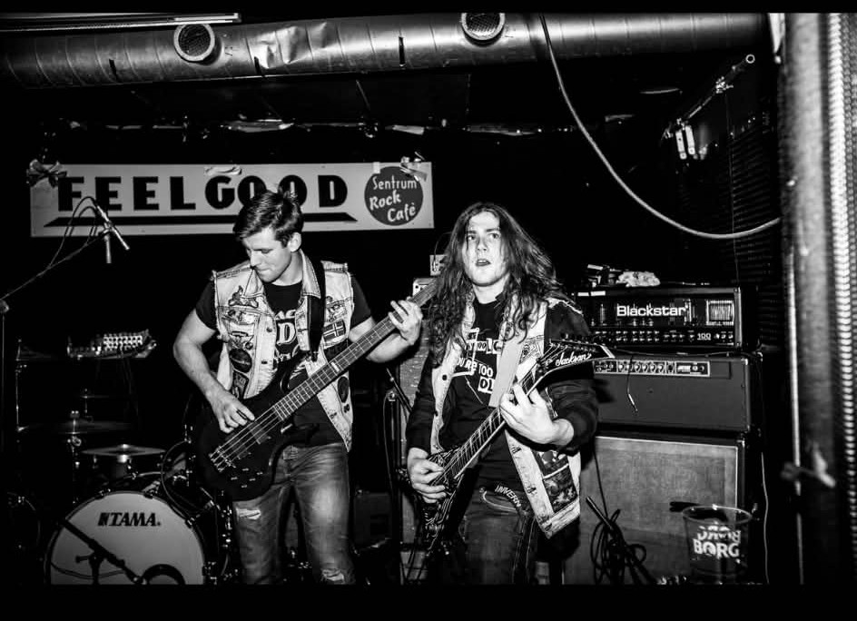

Halden havn, med Fredriksten festning over byen. Foto: Stian Nielsen.
Halden har i flere tiår vært kjent som en av Norges viktigste rockebyer. Som tidligere vertskap for Tons of Rock fikk byen nasjonal oppmerksomhet som et samlingspunkt for rock- og metalentusiaster fra hele landet. Selv om festivalen har flyttet videre, lever rocken fortsatt sterkt i festningsbyen.
I dag bæres musikkmiljøet fram av en rekke mindre scener og lidenskapelige rockere som sørger for konserter året rundt. Steder som Feelgood Halden, Aladdin Scene, Vannvogna, Kulturhuset i Halden og Siste Reis tilbyr jevnlig konserter med både lokale band og etablerte norske rockeartister. Sammen holder de liv i en musikkultur som fortsatt er en viktig del av byens identitet.
Særlig Feelgood Halden har etablert seg som en sentral møteplass for rockepublikummet. Her arrangeres det jevnlig konserter som samler musikkinteresserte fra hele regionen, og stedet har blitt en viktig arena for både lokale og tilreisende band.

Konsert på Feelgood Halden. Foto: Espen Rødstrand og Magne Stenbråten.
En av musikerne som kjenner Haldens rockemiljø fra innsiden er trommeslager Mads Theodor Parton, kjent fra bandene Sloth og Tjuvradd. Sistnevnte skal åpne for punkbandet Aktiv Dødshjelp på Aladdin Scene 23. oktober.
Parton beskriver rockemiljøet i Halden som unikt.
Mads Theodor Parton, trommeslager i Tjuvradd og Sloth.
Halden er ikke den største byen, men musikkmiljøet er tett sammensveiset. Folk kjenner hverandre på tvers av band og sjangre, og det er alltid noen som stiller opp hvis man trenger hjelp. Det skaper et veldig godt fellesskap, sier han.
Gjennom årene har han spilt på flere av byens viktigste scener.
Jeg har vært så heldig å få spille på Kulturhuset, Feelgood, Vannvogna og Aladdin Scene. Hvert sted har sin egen atmosfære og sitt eget publikum, men fellesnevneren er at folk virkelig bryr seg om musikken. Det merker man som musiker.
Han mener nettopp de lokale scenene er avgjørende for at rockelivet fortsatt blomstrer.
Uten disse stedene ville det vært vanskeligere for lokale band å utvikle seg. De gir nye artister muligheten til å stå på scenen, samtidig som de trekker etablerte band til byen. Det er viktig for hele miljøet.
Når samtalen kommer inn på samholdet blant musikerne i Halden, er han tydelig på hva som gjør byen spesiell.
Det er veldig lite konkurranse og mye støtte. Vi heier på hverandre, hjelper til med konserter og deler erfaringer. Når et lokalt band lykkes, føles det som en seier for hele miljøet.
Tjuvradd på Aladdin Scene. Foto: Geir M. Wilsgård.Mads Theodor Parton og Martin Rekdahl under Tjuvradd-konsert på Aladdin Scene. Foto: Geir M. Wilsgård.Konsert på Aladdin Scene. Foto: Geir M. Wilsgård.
Rockebyen lever videre
Selv om Halden ikke lenger arrangerer Tons of Rock, lever byens musikalske arv videre gjennom de mindre scenene. Konsertkalenderen er fortsatt fylt med rock, punk, metal og alternativ musikk, og nye lokale band fortsetter å dukke opp.
For musikere som Mads Theodor Parton er framtiden lys.
Sloth på Aladdin Scene.
Så lenge vi har engasjerte arrangører, gode scener og folk som møter opp på konserter, kommer rocken alltid til å ha en plass i Halden.
Kanskje er rockescenen mindre enn da Tons of Rock dominerte bybildet, men engasjementet er like sterkt. Det er nettopp derfor kallenavnet fortsatt passer så godt: